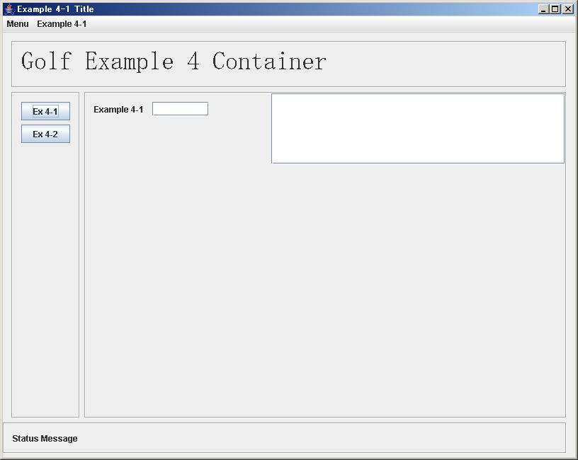

-
- それでは、WEB Browser画面みたいに、Header、Side Bar, Footterなどを、プロジェクトで
共通にに管理し、コンテンツ画面（および、タイトル、メニュー）のみ、固有の画面を使用する
Frameworkを紹介します。
この特徴は、コンテンツ画面の作成も通常の画面と全く同様に、Matisseで個別に作成し、維持管理できる
点です。この特徴を活かすため、すべての画面は、先にExample １で説明したように、「GolfFormInterface」
を implementsすす必要があります。
次の画面が、コンテナ画面です。通常の画面と同様に作成します。

- それでは、このProgramを見てみましょう。
public class Example4ContainerFrame extends javax.swing.JFrame
implements GolfFrameInterface{
private ContainerManager containerMgr;
private void jButton2ActionPerformed(java.awt.event.ActionEvent evt) {
JFrame n = containerMgr.setForm("example4_2Frame");
}
private void jButton1ActionPerformed(java.awt.event.ActionEvent evt) {
JFrame n = containerMgr.setForm("example4_1Frame");
}
public FormManager getFormManager() {
return null;
}
public JMenuBar getMenu() {
return jMenuBar1;
}
public JPanel getContentPanel() {
return ContensPanel;
}
public void initBinding() {
containerMgr = new ContainerManager(this);
}
public JFrame getContainerFrame() {
return this;
}
public void setContainerFrame(JFrame container) {
}
}
- 赤字の所が、入力が必要な項目ですが、大変すくないのが分かると思います。
containerMgr.setForm("example4_1Frame"); これで、画面の切り替えが出来ます。
この例では、ContainerMgrを ContainerFrameの中に持ちましたが、勿論外に出しても問題ありません。
各画面も下記の様に基本的に 「GolfFrameInterface」の項目を設定すれば後は自由に出来ます。
画面 Example 4-1とそのプログラムは以下の通りです。

public class Example4_1Frame extends javax.swing.JFrame
implements GolfFormInterface{
private JFrame container = null;
private FormManager formManager = null;
public FormManager getFormManager() {
return null;
}
public JMenuBar getMenu() {
return jMenuBar1;
}
public JPanel getContentPanel() {
return ContensPanel;
}
public void initBinding() {
formManager = new FormManager(this);
formManager.init();
formManager.createReportList(jScrollPane1);
formManager.setValidationFromCsvResource("Example4_1_bind.csv");
formManager.setBindFromCsvResource("Example4_1_bind2.csv");
}
public JFrame getContainerFrame() {
return container;
}
public void setContainerFrame(JFrame container) {
this.container = container;
}
- それでは、これでExample ４までの説明は終わりです。
いろいろご自分で触ってみて下さい。質問は、SeasarのMLにいつでもどうぞ。
- GOLF HOMEへのリンク
|